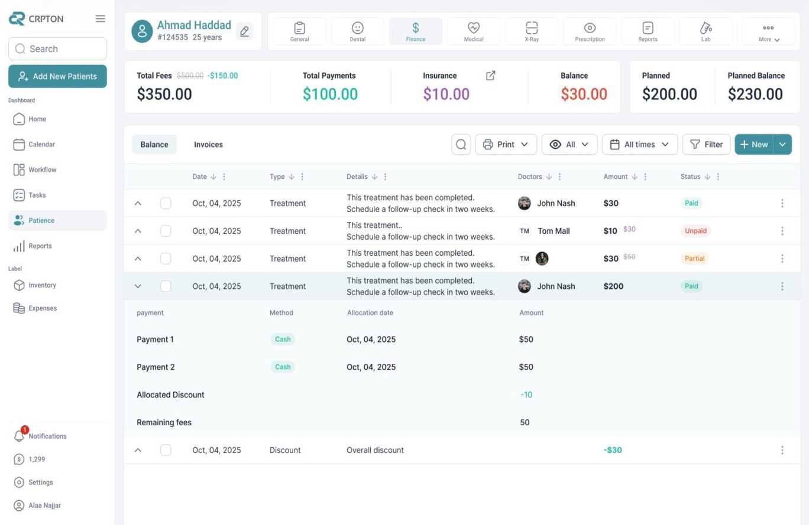
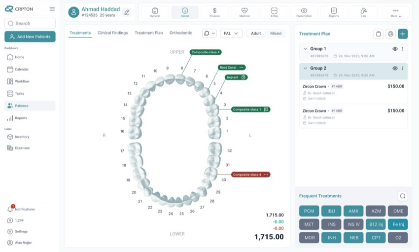
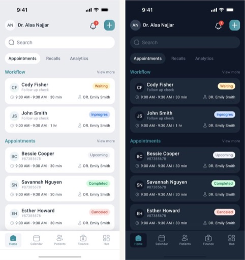

Healthcare · Practice Management
Crpton Taking a clinic system off the desktop

Context
Crpton was clinic-management software installed on desktop computers in doctors' clinics and medical centers — handling patients, treatment plans, and billing. Being desktop-bound meant it lived on one machine, in one room.
Problem
When something broke, there was no easy fix. Support either had to send someone on-site or walk a doctor through a screen-share session mid-clinic — slow, disruptive, and dependent on the doctor being free to sit through it. The software also couldn't be reached from anywhere but that one desktop, even for a quick check between patients.
My Role
UX/UI designer, solely responsible for the end-to-end design of Crpton's rebuild — the web platform and its companion mobile app — from the ground up.
Key Decisions
- Rebuilt Crpton as a browser-based web app instead of installed desktop software, so a doctor — or support — could open it from any device, anywhere, without a site visit or a screen-share session.
- Designed a companion mobile app with a condensed home (appointments, recalls, analytics) and a quick-access "Hub" menu, so a doctor could check on the clinic without being at a desk at all.
- Consolidated every patient's record into one profile with tabs — General, Dental, Finance, Medical, X-Ray, Prescription, Reports, Lab — so a doctor never has to leave a patient's context just to check billing or history.
- Designed an interactive tooth chart for treatment planning: tap a tooth, tag the procedure, and it flows straight into a priced treatment plan — turning a normally manual chart into something fast enough for chairside use.
- Built a full per-patient finance view — fees, payments, insurance, balance — alongside clinic-wide expense analytics, so billing and practice finances live in one system instead of a separate spreadsheet or accounting tool.
- Added Light/Dark/Auto themes and adjustable text sizing, since clinics run under different lighting and staff span a wide range of ages spending long shifts in front of the screen.


Outcome
Crpton is live and in daily use in real clinics today — not a pilot or a beta, but the system doctors and staff actually run their day on.
Reflection
This project pulled me outside pure UI work. To design treatment plans, insurance flows, and clinic billing that actually held up, I had to read into dentistry and accounting well enough to think like the people using the system every day, not just skin the screens for them.
That habit — learning the domain before trusting my own design instincts — turned out to be the most useful thing I took from Crpton, and it's the lens I now bring to any specialized, unfamiliar industry.